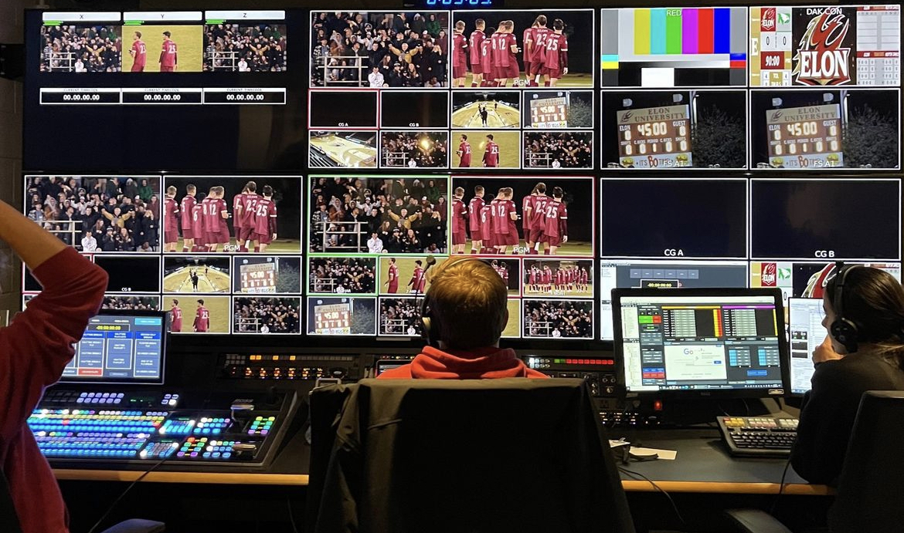
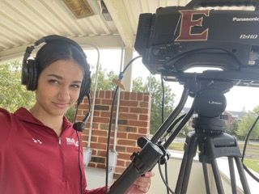
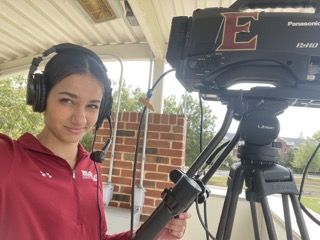

Professional Life
Before Attending Elon University, I graduated from a boarding school in New Hampshire called Brewster Academy. While at Brewster, I earned the Dartmouth Book Award for my advanced writing ability, and managed the Mens Varsity Soccer Team and Mens Varsity Lacrosse Team. Outside of school I have worked in abundance in the resturaunt business as a hostess, servers assitant, and waitress. I hosted and was a servers assitant at Mellow Mushroom, and was a server at ROCK SALT and Salt Life Food Shack. As I Hostess, I sat customers at their tables with menus and scheduled all reservations. As a Servers Assitant, I helped servers bring food to tables, and cleaned the tables, floors, and bathrooms of the restaurant. As a server I took orders and served customers. I also had to have great knowledge of the restaurant's history, menu, and culture. I also helped open and close the restaurant every day. I also have sales experience working as a footwear sales associate as Dicks Sporting Goods. I met with athletes to help them find the perfect shoe for their intended purpose. I had to have immense knowledge of every shoe we sold, and different pediatric issues, I also had to be able to navigate different forms of technology and electronic systems. I am currently employed as a sports broadcaster for Elon Sports Vision, where I broadcast different Elon sports games. This includes working a camera, working a parabolic, controlling audio, sideline reporting, and writing graphics for broadcast programs. I am also currently employed as a Team Lead for Elon New Student Programs. Contact Information - Phone:7043034869 - Email:scaldwell9@elon.edu
 
